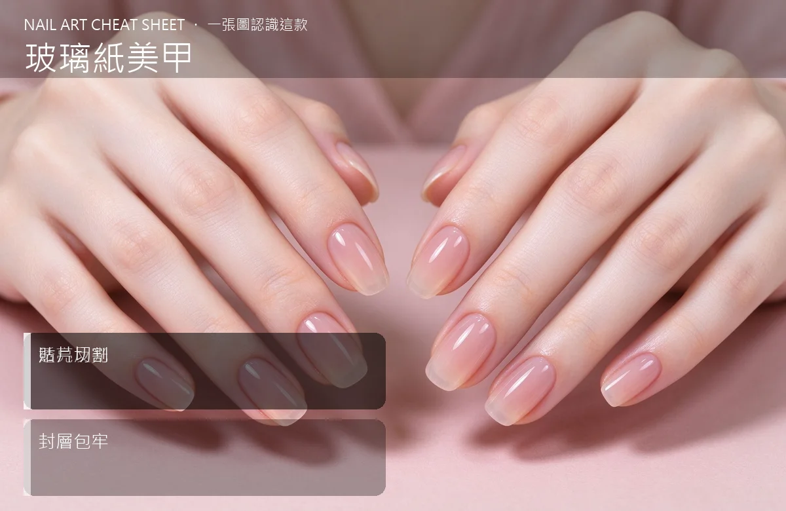

美甲玻璃紙美甲是什麼？入門入門攻略
玻璃紙美甲是把彩色箔紙剪成不規則碎片貼在甲上，轉個手就有鑽石光。
玻璃紙美甲原理與辨識重點：美甲師不說的透亮反光
它用的是『玻璃紙貼片』——一種薄到像糖果包裝紙的彩色箔，美甲師會隨手撕或剪成不規則小碎片，貼在半透明或淺色底膠上，再用封層整包起來。光線一照，那些碎片會反光、會折射，像把碎玻璃貼在指甲上，日系雜誌很常出現。
誰適合做玻璃紙美甲？閃亮款對號入座
喜歡日系、可愛、有一點小華麗感的女生最愛；去約會、拍大頭貼、參加閨蜜下午茶時戴，跟蕾絲洋裝、毛衣、針織外套都搭。
玻璃紙美甲美甲施作步驟：玻璃紙貼片
上好淺色或透明底 → 挑幾張玻璃紙隨手撕成不規則碎片 → 用夾子貼在甲面上（可以斜貼、可以集中在指尖）→ 輕壓服貼 → 上兩層封層把碎片包牢 → 照燈。
玻璃紙美甲優缺點分析：美甲持久度與傷甲評估
| 優點 | 說明 |
|---|---|
| 材料便宜、效果華麗、隨手撕就能有不規則美感，跟一般亮片比起來更有質感。 | 是日系流派的招牌，入門就能上手 |
| 缺點 | 說明 |
| 碎片邊緣如果沒包好容易勾頭髮；碎片太厚的地方封層會有一點凹凸；新長出來時比較明顯。 | 前置與別把玻璃紙剪成規則的小方塊，那會像貼膠帶。要的就是『隨手一撕』的不規則感，越自然越像。沒顧好會打折 |

玻璃紙美甲新手雷區：貼片切割與常見錯誤
注意：別把玻璃紙剪成規則的小方塊，那會像貼膠帶。要的就是『隨手一撕』的不規則感，越自然越像。
玻璃紙美甲和其他美甲做法的差別比較
跟『轉印箔（Foil Nail）』不一樣：轉印箔是整片轉印、圖案比較完整；玻璃紙是碎片拼貼，隨性得多。
玻璃紙美甲美甲常見問題 FAQ
Q：玻璃紙會不會很容易掉？ A：封層包牢就不會。怕掉可以在碎片上先薄薄上一層膠照燈，再上正式封層，等於多一道保險。
Q：可以自己在家做嗎？ A：可以。網路有現成玻璃紙貼片賣，搭配一般凝膠就能 DIY，重點是封層要夠厚把碎片蓋平。
Q：什麼底色最好看？ A：透明、奶白、淺粉最能凸顯碎片的彩色反光；深色底會吃掉光，反而看不出玻璃感。